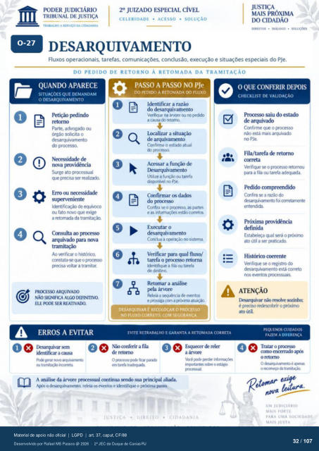

Transcrição automática em português, ainda não revisada. Confira grafia, prazos e termos jurídicos na imagem e no PDF antes de utilizar.
TRASAtyo A SERVIÇO OA CIDADANIA
CELERIDADE • ACESSO • SOLUÇÃO
DIREITOS • • SOLUCôts
DESARQUIVAMENTO
Fluxos operacionais, tarefas, comunicações. conclusão, execução e situações especiais do PJe.
DO PEDIDO DE RETORNO À RETOMADA DA TRAMITAÇÃO
QUANDO APARECE
SITUAÇÕES QUE DEMANDAM
O DESARQUIVAMENTO
Petição Parte, advogado ou
órgáo solicita o desarquivamento
do procesw. Necessidade de
nova providência Surge ato prcressual
que ser Erro ou necessidade
suFrveniente de
fato novo que exige a retorn& da
Consulta ao arquivado para nova
Ao verificar o histórico. cmstata-se que o prcx:esso
gm:isa soltar a tramitar. pru:FSSO ARQUIVAM)
NÃO SIGNIFICA ALGO DEFINITI\O
ELE PODE SER REATIVAM).
ERROS A EVITAR
PASSO A PASSO NO PJe
DO PEDIDO À RETOMADA PLUXO
Identificar a razão do desarquivamento
Verifique na árv«e no a cau9 do retcyru:x
Localizar a situação de arquivamento
Confirme o estado atual do prcx:esso.
Acessar a função de Iksarquivamento
Utilize a Ou tarefa dismnivel no PJe.
Confirmar os dad(F do prtxeso
Confira se o prcxesso. as partes e as estáo c«retoS
Executar o desarquivamento
Comua a m sistema. Verificar qual fluxo/
tarefa o prcxesso retorna Identifique a fila tarefa
Retomar a análise pela árvore
Releia a e prossiga a móxirna atu¿ü).
DESARQUIVAR É RECOLOCAR O PROCESSO
NO FLUXO CORRETO. COM SEGURANÇA.
EVITE RETRABALHO E GARANTA A RETOMADA CORRETA
Ik•sarquivar Não ("ferir a fila
retcrno identificar a causa
geru rm0 txureta
O fru «n tarefa
reler a árvue
06t*) A análise da árvore prtx•essual continua sua principal aliada.
o releia eventos e identifique o próxima
O QUE CONFERIR DEPOIS
CHECKLIST DE VALIDAÇÃO
Prt:resso saiu do estado de arquivado
Confirme que o prcxe-sw nao está mais arquivado
no PJe. Fila/tarefa de retorru)
correta se 0 retornou
para a fila tarefa Cmfira se a raü) do
desucÜvamento foi c«retarrmte Estat»leça qual será o Vóxin•w
ato útil a ser vaticacb. Histórico «Mente
Verifique se o registro desarquivamento está correto
nos eventos prcx:essuais.
ATENÇÃO
não é preciso redescobrir o próxim
ato útil.
CUIDADOS
FAZEM A DIFERENCA
oe como encerrado
o retorno pez La.
UM JUDICIÁRIO
MAIS FORTE
PARA UMA SOCIEDADE
Ver também o infográfico original (página 32)
